The Lagrange path
Lagrange proved Wilson's theorem, and extended it as follows:
Lagrange's theorem (1777).
- Primes 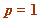 (mod 4) (and there are an infinite number of these: 5, 13, 17, 29, 37, 41, 53, 61, 73, 89, 97, ...)
satisfy
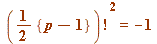 (mod )
)
- Primes 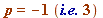 (mod 4) (and there are an infinite number of these: 3, 7, 11, 19, 23, 31, 43, 47, 59, 67, 71, 79, 83, ...)
satisfy
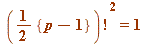 (mod )
)
And, by a well-known standard theorem (the 'fundamental theorem': if a prime divides the product of two integers, then it divides one of those integers), the latter splits ( 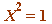 (mod ) implies 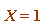 (mod
) implies 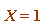 (mod  ) or 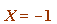 (mod
) or 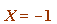 (mod  ) ) two ways:
) ) two ways:
- For (mod
 ) we have:
) we have:
either 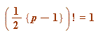 (mod ) or 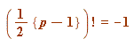 (mod
) or 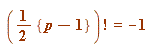 (mod  )
)
Here I show the behaviour of 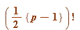 (mod ) for all odd primes up to
| > | L := []: for p from 5 by 4 to 200 do if isprime(p) then
R2||p := PRFAC(1, (p-1)/2, p, 1): ### COMPUTING THE HALF-FACTORIAL RESIDUE L := [op(L), p]: fi od: print(``); print(array([ ['p', ``, ``, '({p-1}/2)!', ``, ``, '({p-1}/2)!^2'], seq([p, ``, ``, R2||p, ``, ``, mods(R2||p^2, p)], ### NOTICE THE SQUARE OF THE HALF-FACTORIAL RESIDUE p = L)])): print(``); lprint(`The final two columns show LEAST ABSOLUTE residues mod p.`); |
| 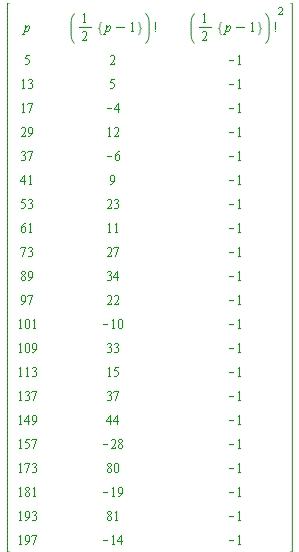 | |
| `The final two columns show LEAST ABSOLUTE residues mod p.` |
| > |
| > | L := []: for p from 5 by 4 to 250 do if isprime(p) then
R4||p := PRFAC(1, (p-1)/4, p, 1): L := [op(L), p]: fi od: print(``); print(array([ ['p', ``, ``, '({p-1}/4)!', ``, ``, '({p-1}/4)!^2', ``, ``, '({p-1}/4)!^4'], seq([p, ``, ``, R4||p, ``, ``, mods(R4||p^2, p), ``, ``, mods(R4||p^4, p)], p = L)])): print(``); lprint(`The final three columns show LEAST ABSOLUTE residues mod p.`); |
| 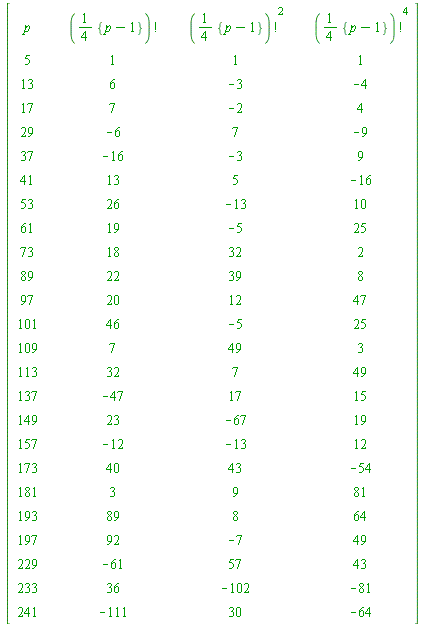 | |
| `The final three columns show LEAST ABSOLUTE residues mod p.` |
| > |
| > | L := []: for p from 5 by 4 to 250 do if isprime(p) then
R4||p := PRFAC(1, (p-1)/4, p, 1): L := [op(L), p]: fi od: print(``); print(array([['p', ``, ``, '({p-1}/4)!^8'], seq([p, ``, ``, mods(R4||p^8, p)], ### NOTICE THE 8-TH POWER p = L)])): print(``); lprint(`The final column show LEAST ABSOLUTE residues mod p,`); print(``); lprint(`and take note of those TWO -1 residues at p = 17 and 241.,`); |
| 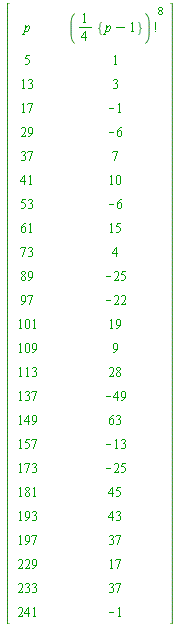 | |
| `The final column show LEAST ABSOLUTE residues mod p,` | |
| `and take note of those TWO -1 residues at p = 17 and 241.,` |
| > |
| > |